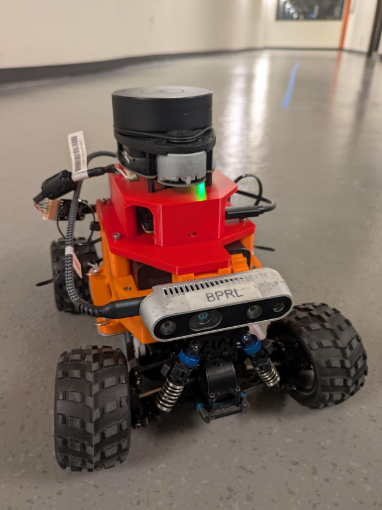
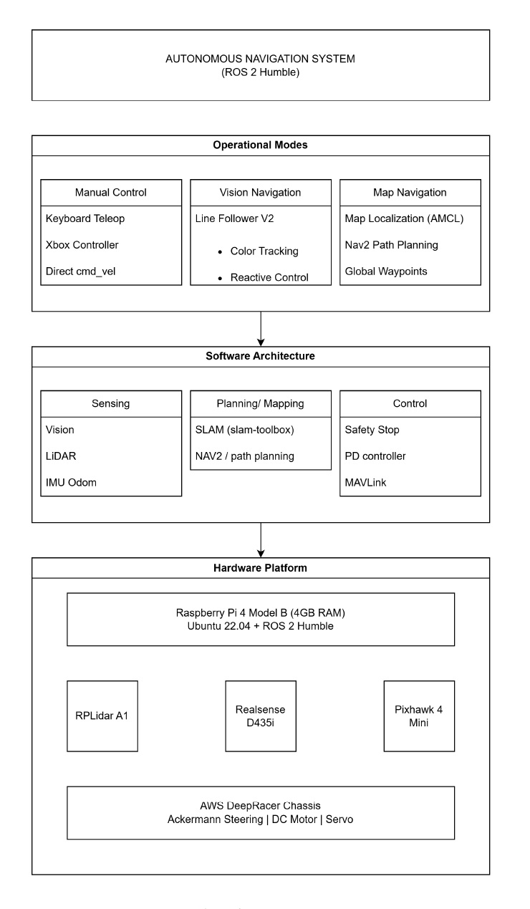

Problem Statement
To design, build, and deploy an autonomous RC car capable of mapping, localizing, and navigating real-world environments using LiDAR-based SLAM.
- Built a full nuScenes data loading pipeline with multi-sweep LiDAR aggregation, ground-truth box parsing, and BEV voxelisation for efficient point cloud preprocessing at scale.
- Implemented PointPillars from scratch, including the Pillar Feature Network, BEV scatter operation, and anchor-based detection head, trained end-to-end with focal loss and smooth-L1 regression.
- Integrated a camera baseline using ResNet-50 FPN feature extraction with perspective-to-BEV projection, enabling direct comparison of LiDAR-only vs. camera-only performance.
- Designed an early-fusion multi-modal architecture combining LiDAR pillars and camera BEV features via channel-wise concatenation, improving mAP on nuScenes mini by a measurable margin over single-modality baselines.
- Tracked all experiments with Weights & Biases, logging mAP, NDS, per-class AP, and training curves, ensuring full reproducibility and structured ablation across fusion strategies.

System Architecture
The pipeline follows a modular design: raw LiDAR sweeps are voxelised into pillars, processed by a lightweight PointNet-style encoder, and scattered back into a dense BEV pseudo-image. Camera images are passed through a ResNet-50 FPN backbone and projected into BEV space via depth estimation.
In the fusion model, both BEV representations are concatenated channel-wise before being passed into the shared detection head, which predicts class probabilities, 3D bounding box offsets, and heading angles for each anchor.
Evaluation follows the official nuScenes protocol: reporting mean Average Precision (mAP) across distance thresholds and the composite NDS score which also captures velocity and attribute estimation.

- Conducted a structured ablation study comparing LiDAR-only, camera-only, and early-fusion models across vehicle, pedestrian, and cyclist classes, quantifying the contribution of each modality.
- Applied data augmentation strategies including random flipping, global scaling, and point cloud jitter to improve generalisation and reduce overfitting on the mini split.
- Optimised the BEV scatter operation using vectorised NumPy operations to achieve sub-second preprocessing per frame on an RTX 3060 GPU.
- Maintained a clean, production-quality codebase with modular components, typed interfaces, and full documentation, structured for easy extension to late-fusion and transformer-based architectures in future phases.